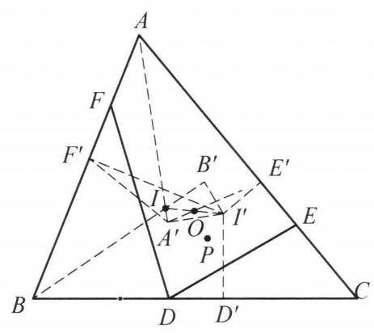

82 例 7：外心内心对称轴与线段等长
82.1 题目
设 \triangle {ABC} 的外心，内心分别为 O, I ，点 D, E, F 分别在边 {BC},{CA}, \; {AB} 上满足 {BD} + {BF} = {CA},{CD} + {CE} = {AB} . 若 \triangle {BFD} 与 \triangle {CDE} 的外接圆交于不同于 D 的点 P . 证明: {OP} = {OI} .

图 5-11
82.2 参考解答
如图 5-11，作 I 关于 O 的对称点 {I}^{\prime } ， 过 {I}^{\prime } 向 {BC},{CA},{AB} 作垂线,垂足分别为 {D}^{\prime } , {E}^{\prime },{F}^{\prime } ,过 {I}^{\prime } 作 {I}^{\prime }{A}^{\prime } \perp {IA} 于 {A}^{\prime },{I}^{\prime }{B}^{\prime } \perp {IB} 于 {B}^{\prime } . 则 B{F}^{\prime } + B{D}^{\prime } = {CA}, C{D}^{\prime } + C{E}^{\prime } = {AB} . 所以, D{D}^{\prime } = E{E}^{\prime } = F{F}^{\prime }.
因为 \angle {I}^{\prime }{A}^{\prime }A = \angle {I}^{\prime }{F}^{\prime }A = \angle {I}^{\prime }{E}^{\prime }A = {90}^{ \circ } ,所以, A,{F}^{\prime },{A}^{\prime },{E}^{\prime } 四点共圆. 由 \angle {BAI} = \; \angle {CAI} ,知 {A}^{\prime }{F}^{\prime } = {A}^{\prime }{E}^{\prime } ,又 \angle {A}^{\prime }{F}^{\prime }A = \angle {A}^{\prime }{E}^{\prime }C , 于是 \triangle {A}^{\prime }{F}^{\prime }F \cong \triangle {A}^{\prime }{E}^{\prime }E ,因此, \angle {A}^{\prime }F{F}^{\prime } = \; \angle {A}^{\prime }E{E}^{\prime } ,则 A, E,{A}^{\prime }, F 四点共圆.
同理, B, D,{B}^{\prime }, F 四点共圆.
由 \angle {PFA} = \angle {PDB} = \angle {PEC} ,知 A, F, P, E 四点共圆,故 A, F,{A}^{\prime }, P 四点共圆, B, F,{B}^{\prime }, P 四点共圆. 所以
\angle P{B}^{\prime }I + \angle P{A}^{\prime }I = \angle P{B}^{\prime }B + \angle P{A}^{\prime }A = \angle {PFB} + \angle {PFA} = {180}^{ \circ },
因此, P,{B}^{\prime }, I,{A}^{\prime } 四点共圆,又因为 \angle {I}^{\prime }{A}^{\prime }I = \angle {I}^{\prime }{B}^{\prime }I = {90}^{ \circ } ,所以, P 在以 I{I}^{\prime } 为直径的圆上,即 {OP} = {OI} . 原问题得证.
注: 先找出一些以 O 为圆心, {OI} 为半径的圆上的点,再证明点 P 与它们共圆,因而有 {OP} = {OI} .
82.3 解题思路与分析
这份证明之所以让人觉得“费解”甚至“像变魔术”，是因为教材采用了综合法（从构造直接推向结论）的书写方式，把命题背后的三大核心几何背景——密克尔点（Miquel Point）的自由度、旁心三角形外心（Bevan 点）的垂足性质、以及动圆过定点的旋转全等中心——全部隐藏在了辅助线的直接定义之后。
如果我们顺着“发现证明的逆向思维过程”把这层窗户纸捅破，你会发现每一步辅助线的引出都是极其自然且必然的。
82.3.1 一、 核心洞察：发现隐藏的“自由度”与特殊位置
仔细审视题设条件：点 D, E, F 在三边上，仅受两个线性方程约束： BD + BF = CA, \quad CD + CE = AB 3 个动点，只有 2 个方程，说明点 D, E, F 并不是固定的，而是有 1 个自由度！ 如果设 BD = x（a, b, c 为三边长），那么： * CD = a - x * BF = b - x \implies AF = c - b + x * CE = c - a + x \implies AE = a + b - c - x
当 x 变化时，D, E, F 三个点在三边上以完全相同的速率滑动。而对于任意一组满足条件的 (D, E, F)，由密克尔定理可知，\triangle BFD、\triangle CDE、\triangle AEF 的外接圆共点于 P，且满足： \angle PDB = \angle PEC = \angle PFA = \theta 题目的结论是 OP = OI（定长）。这意味着：随着 D, E, F 在三边上等速滑动，密克尔点 P 一直在以 O 为圆心、OI 为半径的定圆 \odot(O, OI) 上运动！
既然 P 在这个圆上运动，且不同的位置对应不同的夹角 \theta，一个极其自然的探路思路就是：当 \theta = 90^\circ 这个最特殊、最对称的位置时，P 在圆 \odot(O, OI) 的哪里？
82.3.2 二、 第一把钥匙：为什么会想到作 I' 与垂足 D', E', F'？
当 \theta = 90^\circ 时，PD \perp BC, PE \perp CA, PF \perp AB，此时 D, E, F 恰好是点 P 向三边所作垂线的垂足（即 \triangle DEF 是 P 的垂足三角形）。
我们不妨直接算一算：平面上哪一个点 I'，它向三边作垂线的垂足 D', E', F' 刚好满足 BD' + BF' = b 且 CD' + CE' = c？
- 回顾内心 I 的垂足性质：设内心 I 在 BC, CA, AB 上的投影分别为 D_I, E_I, F_I（即内切圆切点），设半周长为 s = \frac{a+b+c}{2}，则熟知： BD_I = BF_I = s - b, \quad CD_I = CE_I = s - c, \quad AE_I = AF_I = s - a
- 尝试计算条件所需的值：如果我们希望某个点 I' 的垂足 D', E', F' 不仅好算，还能凑出 b 和 c，注意到： (s - c) + (s - a) = 2s - a - c = b = CA (s - b) + (s - a) = 2s - a - b = c = AB 这意味着，只要让 BD' = s - c（恰好等于 CD_I）、BF' = s - a（恰好等于 AF_I）、CE' = s - a（恰好等于 AE_I），条件就完美满足！
- 几何意义浮现：在边 BC 上，BD' = CD_I 意味着点 D' 与内切圆切点 D_I 关于 BC 的中点对称！同理，E' 与 E_I 关于 CA 的中点对称，F' 与 F_I 关于 AB 的中点对称。
- 锁定点 I'：因为外心 O 在三边上的投影恰好是三边的中点，根据平行线分线段成比例定理，既然垂足 D', E', F' 与 I 的垂足关于 O 的垂足对称，那么点 I' 必然是点 I 关于点 O 的对称点（在几何学中，这个点 I' 称为 \triangle ABC 的 Bevan 点，即旁心三角形的外心）！
这就彻底解释了证明的第一步： * 作 I 关于 O 的对称点 I'，则 \odot(O, OI) 就是以 II' 为直径的圆。 * I' 就是当 \theta = 90^\circ 时点 P 所在的特殊位置！ * 一旦把一般位置的 (D, E, F) 与这个基准位置 (D', E', F') 作差对比，原本复杂的边长和条件 BD + BF = CA, CD + CE = AB 瞬间化简成了等距平移条件： DD' = EE' = FF' （如图 5-11 所示，相对于顶点 A，F 向 A 靠近了 FF'，而 E 远离 A 移动了 EE'。）
82.3.3 三、 第二把钥匙：为什么会想到作 I'A' \perp IA 与 I'B' \perp IB？
有了 DD' = EE' = FF'，接下来我们要处理一般位置的点 P。 由 \angle PFA = \angle PDB = \angle PEC 可知，A, F, P, E 四点共圆（且 B, D, P, F 四点共圆）。
观察顶点 A 处的动圆 \odot(AFE)：当 F 在 AB 上、E 在 AC 上滑动，且始终保持 FF' = EE'（一进一退）时，这是一类非常经典的几何模型——“两边上等距滑动的动割线与定点产生旋转全等”：
旋转全等引理：若点 F, E 分别在射线 AB, AC 上运动且满足 FF' = EE'（方向一近一远），则动圆 \odot(AFE) 必恒过一个定点 A'。
如何找出这个定点 A'？ 如果希望 A, F, A', E 四点共圆（即 \angle A'FA + \angle A'EA = 180^\circ，等价于 \angle A'FF' = \angle A'EE'），最直接的方法是找一个点 A'，使得 \triangle A'F'F \cong \triangle A'E'E（SAS 全等）！ 为了凑出这个 SAS 全等，已知条件已经有了一组对应边 F'F = E'E，因此点 A' 必须同时满足两个条件： 1. 夹角相等（\angle A'F'F = \angle A'E'E）：即 \angle A'F'A + \angle A'E'C = 180^\circ，这意味着 A, F', A', E' 四点共圆！而 \angle AF'I' = \angle AE'I' = 90^\circ，所以 \odot(AF'E') 就是以 AI' 为直径的圆。因此，点 A' 必须在以 AI' 为直径的圆上。 2. 另一组对应边相等（A'F' = A'E'）：在圆 \odot(AF'E') 上，到弦 AF' 和 AE' 端点距离相等的点，必然位于 \angle F'AE' 的角平分线上——即内心连线 AI 上！
把这两个条件合二为一： * 点 A' 在直线 AI 上； * 点 A' 在以 AI' 为直径的圆上（即 \angle AA'I' = 90^\circ）。
所以，点 A' 就是过 I' 向 IA 作垂线的垂足（I'A' \perp IA）！ 完全同理，为了锁定过顶点 B 的动圆 \odot(BDF)，只需过 I' 向 \angle B 的平分线 IB 作垂线，垂足 B' 就是 \odot(BDF) 恒过的定点！
82.3.4 四、 终局拼图：为什么 A', B' 能把 P 锁定在目标圆上？
现在你会发现，A' 和 B' 这两个点简直是“神来之笔”，因为它们同时扮演了两个角色：
- 它们本身就在目标圆 \odot(O, OI) 上： 因为 I'A' \perp IA 且 I'B' \perp IB，所以 \angle IA'I' = \angle IB'I' = 90^\circ。这说明 A', B' 都在以 II' 为直径的圆上——也就是我们要证的、以 O 为圆心、OI 为半径的圆！
- 它们与顶点 A, B 的连线都经过同一个点 I：
- 在圆 \odot(AF'A'E') 衍生出的动圆 \odot(AFA'PE) 中，因为 A, I, A' 三点共线（都在 \angle A 的平分线上），利用圆内接四边形外角等于内对角（或同弧所对圆周角相等），可以直接把角从 A' 传递到 F： \angle PA'I = \angle PA'A = \angle PFA
- 在动圆 \odot(BFB'PD) 中，因为 B, I, B' 三点共线（都在 \angle B 的平分线上），同样可以把角从 B' 传递到 F： \angle PB'I = \angle PB'B = \angle PFB
- 而点 F 在边 AB 上，\angle PFA 与 \angle PFB 刚好是一对邻补角！相加立得： \angle PA'I + \angle PB'I = \angle PFA + \angle PFB = 180^\circ
这说明动点 P 与三个定点 I, A', B' 共圆。既然 I, A', B' 已经确定了以 II' 为直径的圆 \odot(O, OI)，点 P 就必然落在这个圆上，从而 OP = OI！
82.3.5 五、 思路脉络总览（逆向还原 vs 正向书写）
为了让你对整道题的构造逻辑一目了然，我们可以将解题者的思考方向与书本的书写方向做个对比：
| 思考阶段 | 解题者的自然探索（逆向寻宝） | 教材的证明书写（正向呈现） |
|---|---|---|
| 第一步 | 发现 D, E, F 有 1 个自由度，考虑 \angle PDB = \angle PFA = \angle PEC = 90^\circ 的特殊情况，算出此时 P 必为 I 关于 O 的对称点 I'。 | 直接宣布：“作 I 关于 O 的对称点 I'，向三边作垂线得 D', E', F'。” |
| 第二步 | 将一般位置与垂足位置作差，把繁琐的线段和转化为等距平移 DD' = EE' = FF'。 | 算得 BF' + BD' = CA 等，直接推出 DD' = EE' = FF'。 |
| 第三步 | 看到 FF' = EE'，想到利用旋转全等 \triangle A'F'F \cong \triangle A'E'E 找动圆 \odot(AFE) 恒过的定点 A'，发现 A' 需同时在 AI 和以 AI' 为直径的圆上，即 I'A' \perp IA。 | 直接宣布：“作 I'A' \perp IA 于 A'，证 \triangle A'F'F \cong \triangle A'E'E，得 A, E, A', F 共圆。” |
| 第四步 | 利用 A-I-A' 与 B-I-B' 共线導角，证 P 在定圆 \odot(IA'B')（即以 II' 为直径的圆）上。 | 导出 \angle PB'I + \angle PA'I = 180^\circ，证得 P 在以 II' 为直径的圆上。 |
掌握了“利用自由度找极端（垂直）位置定基准”以及“等距滑动割线找旋转中心定动圆定点”这两个高等几何的核心套路，这类看似天马行空的构造就会变得有迹可循。
82.4 分步证明
82.4.1 步骤 0：✦ 已知条件与几何构形
给定 \triangle ABC 的外心 O、内心 I 与外接圆 \odot(ABC)。 点 D, E, F 分别在边 BC, CA, AB 上，满足： 条件 BD + BF = CA = b,\quad CD + CE = AB = c。 作 \triangle BFD 与 \triangle CDE 的外接圆，两圆交于点 D 与第二交点 P。 求证 OP = OI。
82.4.2 步骤 1：① 对称点 I' 投影，导出 DD'=EE'=FF'
作内心 I 关于外心 O 的中心对称点 I’（O 为 II' 中点）。 过 I' 分别向三边 BC, CA, AB 作垂线，垂足为 D', E', F'。 因外心 O 到各边的垂足为各边中点，由投影线段关系可证： BD' = s - c,\quad BF' = s - a \implies BF' + BD' = CA = b； CD' = s - b,\quad CE' = s - a \implies CD' + CE' = AB = c。 与已知条件 BD+BF=CA, CD+CE=AB 相较，立即得出线段等长： DD' = EE' = FF'。
82.4.3 步骤 2：② 作 I'A' \perp IA，导出全等与共圆 A,E,A',F
连结角平分线 IA，过 I' 作 I'A' \perp IA 于点 A’。 因 \angle I'A'A = \angle I'F'A = \angle I'E'A = 90^\circ，故 A, F', A', E' 四点共圆（以 AI' 为直径）。 角平分线 AA' 平分弧 \overset{\frown}{F'E'}，推得弦长 A'F' = A'E'。 由步骤 1 知 FF' = EE'，且夹角均为直角，故直角三角形全等： 全等 \triangle A'F'F \cong \triangle A'E'E。 对应角 \angle A'FF' = \angle A'EE'，即四边形对角互补，导出： A, E, A', F 四点共圆。
82.4.4 步骤 3：③ 作 I'B' \perp IB，同理导出共圆 B,D,B',F
连结角平分线 IB，过 I' 作 I'B' \perp IB 于点 B’。 同理，\angle I'B'B = \angle I'F'B = \angle I'D'B = 90^\circ，点 B, F', B', D' 四点共圆（以 BI' 为直径）。 由角平分线平分弦弧得 B'F' = B'D'。 结合直角边 FF' = DD'，再次得到直角三角形全等： 全等 \triangle B'F'F \cong \triangle B'D'D。 从而对应角 \angle B'FF' = \angle B'DD'，立即导出： B, D, B', F 四点共圆。
82.4.5 步骤 4：④ Miquel 点传递，导出 A,F,A',P 与 B,F,B',P 共圆
根据著名的 Miquel 定理，\triangle BFD、\triangle CDE 的外接圆交点 P 亦必落在 \triangle AEF 的外接圆 \odot(AEF) 上。 且由圆周角性质，点 P 满足经典等角关系： \angle PFA = \angle PDB = \angle PEC。 由步骤 2 知 A, E, A', F 四点共圆，故该圆正是 \odot(AEF)，因此： A, F, A', P 四点共圆； 同理，由步骤 3 知 B, D, B', F 共圆与 \odot(BFD) 重合，因此： B, F, B', P 四点共圆。
82.4.6 步骤 5：⑤ 顶角对角互补，导出 P, B', I, A' 四点共圆
考查四边形 PA'IB' 在顶点 B' 与 A' 处的角： 在圆 \odot(BFB'P) 中同弧圆周角：\angle PB'B = \angle PFB； 在圆 \odot(AFA'P) 中同弧圆周角：\angle PA'A = \angle PFA。 由于点 A, F, B 在三角形边 AB 上共线，两角互为邻补角： \angle PFB + \angle PFA = 180^\circ。 因 A' 在直线 IA 上、B' 在直线 IB 上，故： \angle PB'I + \angle PA'I = \angle PB'B + \angle PA'A = 180^\circ。 四边形对角互补，立即证明：P, B', I, A' 四点共圆！
82.4.7 步骤 6：⑥ II' 直径圆覆盖点 P，得出最终结论 OP = OI
回顾点 A' 与 B' 的垂线定义： I'A' \perp IA \implies \angle I'A'I = 90^\circ； I'B' \perp IB \implies \angle I'B'I = 90^\circ。 这表明：点 A' 和 B' 均在以线段 II' 为直径的圆上！ 由步骤 5 知点 P, B', I, A' 四点共圆，该外接圆必是以 II' 为直径的圆。 因此：点 P 落在以 II’ 为直径的圆上！ 该直径圆的圆心即为 II' 的中点——外心 O，其半径为 \frac{1}{2}II' = OI。 既然 P 在以 O 为圆心、OI 为半径的圆上，立即得出：
OP = OI
全题得证！✦